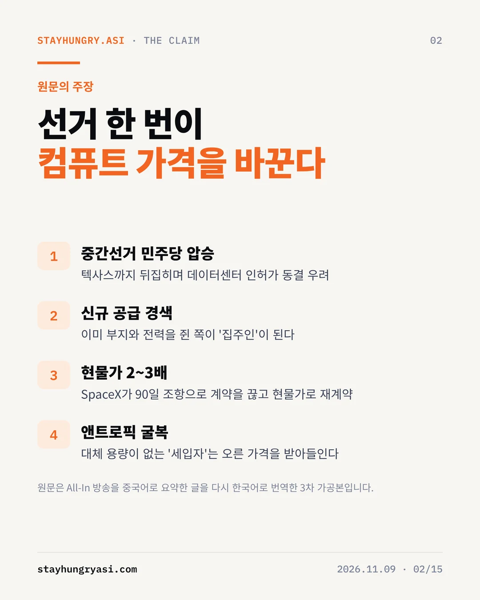
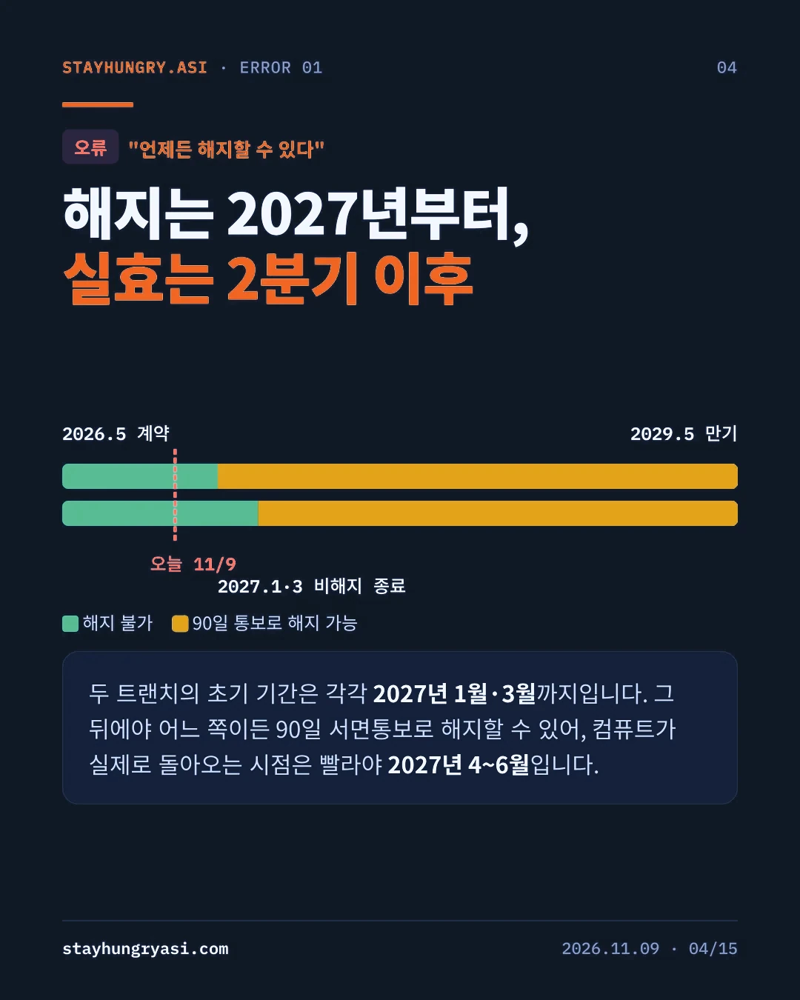
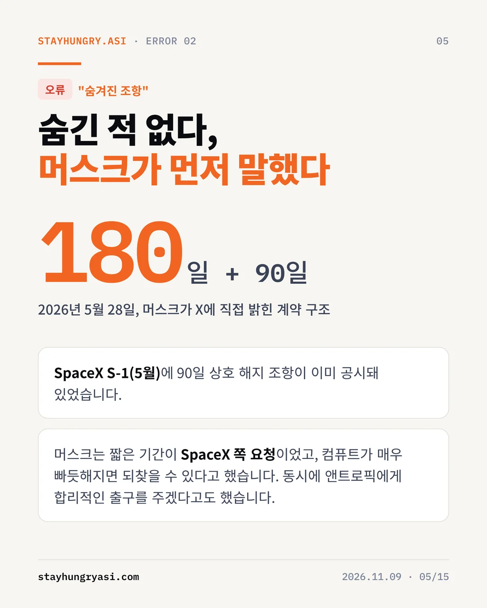
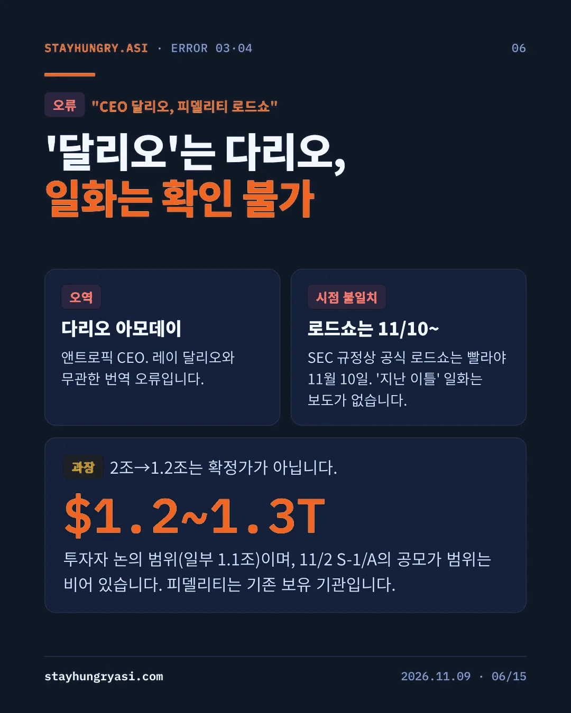
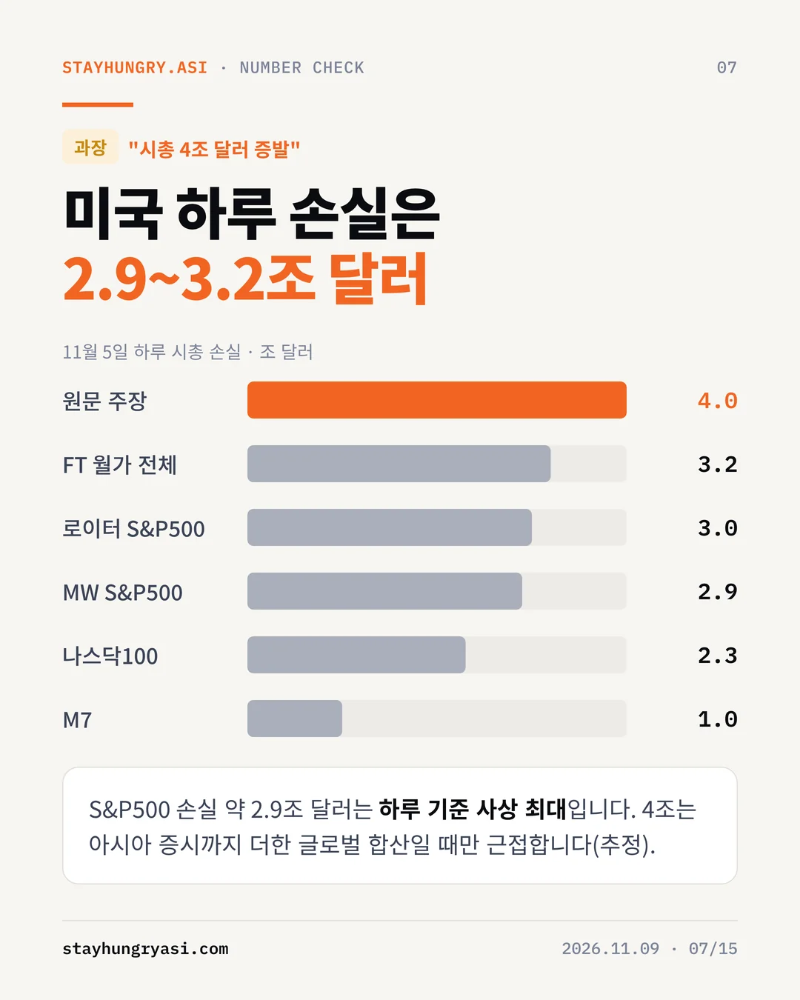
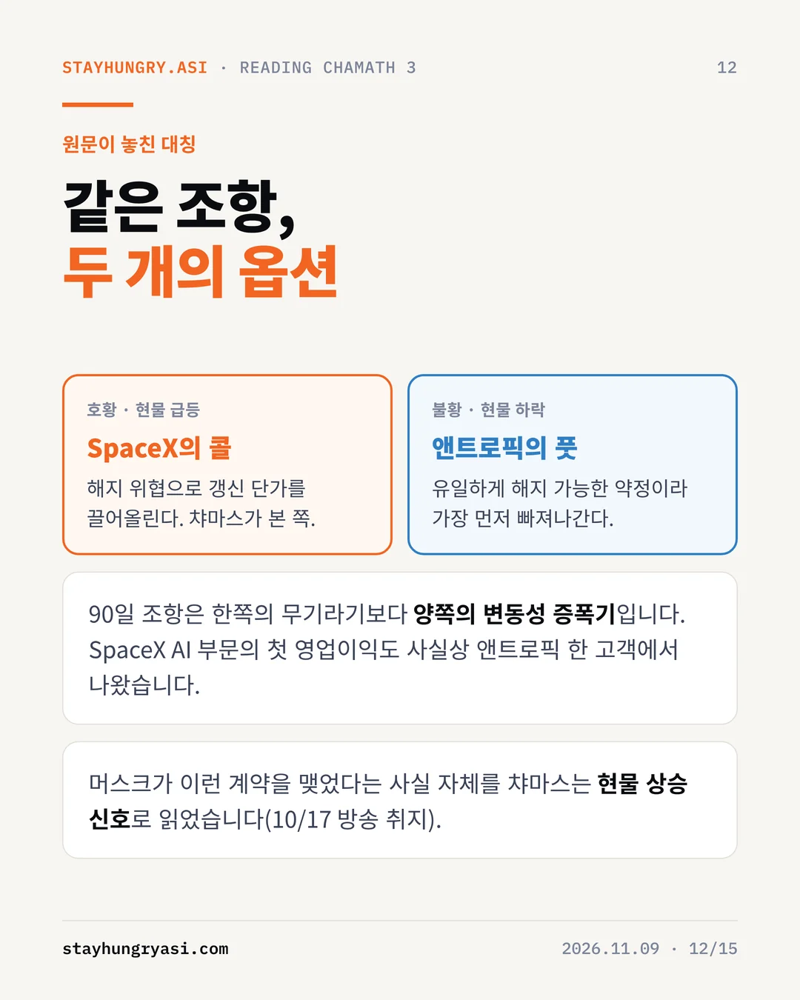
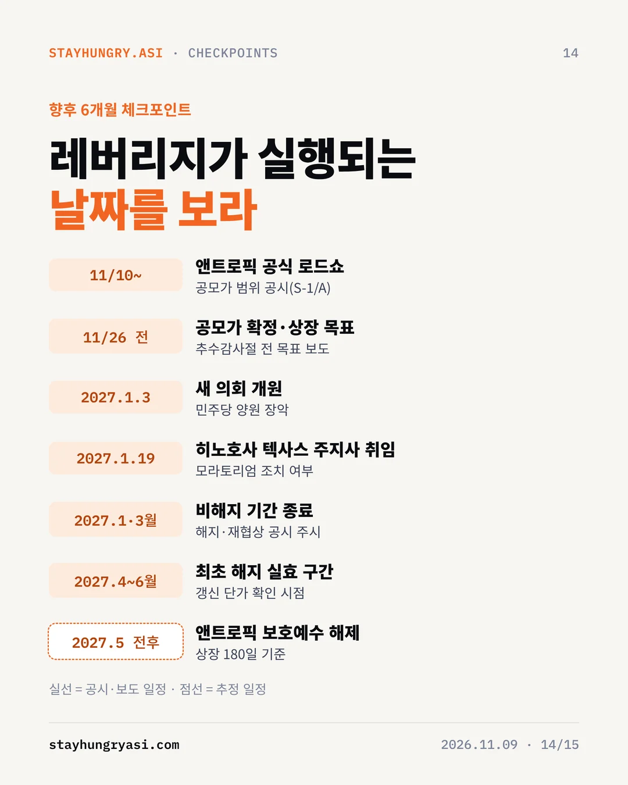
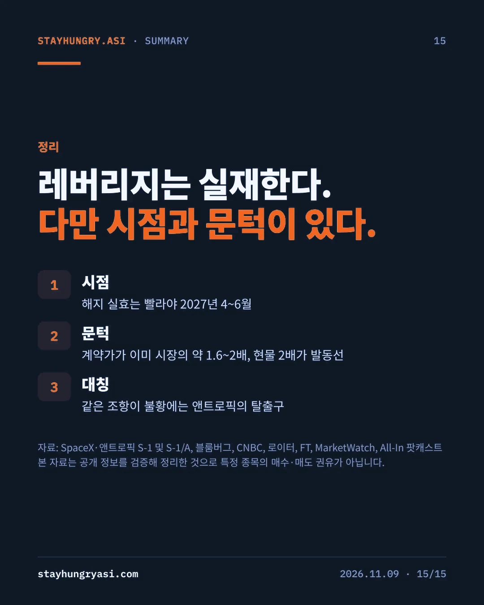

데이터 기준 2026년 11월 9일(한국 시간) · stayhungryasi.com
표기 규칙: 수치는 출처 기준 사실이다. '추정'은 작성자 판단이고, 시나리오 확률은 작성자의 주관적 판단이다. 원문 주장 20개를 1차 자료와 대조해 판정했다.
이해충돌 고지: 이 리서치는 앤트로픽의 AI(Claude)를 써서 작성했고, 본문이 앤트로픽의 계약과 상장을 다룬다. 투자 권유가 아니다.
핵심만 15장으로 요약했다. 이미지를 누르면 크게 볼 수 있다.
검증 대상은 국내에 유통된 한국어 기사다. 원 발언은 All-In 팟캐스트 11월 8일 방송이며, 이를 중국어로 요약한 글이 다시 한국어로 기계번역된 것으로 보인다. 본문에 남은 '各地', '후槽歯'(이를 악문다는 뜻의 중국어 관용구) 같은 한자 표기가 그 흔적이다.
원문에서 숫자, 인물, 날짜, 계약 조건, 일화를 포함한 사실 주장 20개를 추출해 SpaceX·앤트로픽의 SEC 제출 서류(S-1, S-1/A)와 블룸버그, 로이터, CNBC, FT, MarketWatch 보도로 대조했다.
| 단계 | 내용 | 확인된 왜곡 |
|---|---|---|
| 원본 | All-In 팟캐스트 11/8 방송 | 발언 자체는 확인됨. '하루 4조 달러 증발'은 방송 표현으로 집계치보다 크다 |
| 2차 가공 | 중국어 요약글(추정) | 비해지 기간 조건 누락, 공시된 조항을 '숨은 조항'으로 서술 |
| 3차 가공 | 한국어 번역본 | CEO 다리오 아모데이를 '달리오'로 표기, 확인되지 않는 피델리티 로드쇼 일화 |
20개 주장 가운데 사실 6개, 부분사실·과장 8개, 오류 4개, 확인불가 2개로 판정했다. 주장의 뼈대(발언의 존재, 상호 해지 조항, 선거 결과)는 사실이지만 레버리지의 시점과 조건을 결정하는 디테일에서 오류가 나왔다.
| 원문 주장 | 판정 | 확인된 사실 |
|---|---|---|
| 계약에 양방향 90일 해지 조항이 있다 | 사실 | SpaceX S-1(2026년 5월)과 앤트로픽 S-1(10월 26일)에 상호 90일 서면통보 해지 조항 공시 |
| "언제든" 해지할 수 있다 | 오류 | 초기 기간이 트랜치별로 2027년 1월·3월까지. 이후에만 어느 쪽이든 90일 통보 가능 |
| 조항이 "숨어 있다" | 오류 | 5월 S-1 공시. 머스크가 5월 28일 X에서 180일 임대 후 90일 상호 해지 구조이며 짧은 기간은 SpaceX 요청이라고 직접 밝힘 |
| CEO '달리오'가 투자자에게 감사 인사 | 오류 | 앤트로픽 CEO는 다리오 아모데이. 해당 일화는 보도로 확인되지 않음 |
| 지난 이틀간 피델리티 로드쇼 | 오류 | SEC 규정상 공식 로드쇼는 빨라야 11월 10일. 피델리티는 기존 보유 기관 |
| 시총 약 4조 달러 증발 | 과장 | 11월 5일 하루 S&P500 약 2.9조 달러(하루 기준 사상 최대), 로이터 약 3조, FT 월가 전체 3.2조 |
| IPO 가치 2조→1.2조로 깎임 | 과장 | 투자자 논의 범위 1.2~1.3조 달러(일부 1.1조). 11월 2일 S-1/A의 공모가 범위는 공란 |
| 워터게이트 이후 최악의 패배 | 과장 | 1974년에 비견되는 규모로 보도. 1974년 공화당 하원 손실은 48석, 이번 민주당 흐름은 최대 40석으로 최종 집계 필요 |
| 텍사스가 민주당으로 뒤집혔다 | 사실 | 주지사 선거에서 히노호사가 현직 애벗에 승리, 상원에서 탈라리코 당선 |
| 주지사들이 데이터센터를 기피 | 과장 | 최소 29개 지자체가 금지·제한안 통과, 찬성은 1곳. 다수는 비구속 투표이며 애벗은 이미 승인 중단 상태 |
| 현물가 2~3배 가능 | 확인불가 | 전망. B200 현물가는 2026년 3월 이후 이미 두 배 이상 상승한 기록이 있음 |
| "관계가 아닌 계산표의 문제" | 사실 | 방송 요약본에 같은 취지의 발언 수록 |
전체 20개 중 핵심 12개를 수록했다. 판정 기준: 사실(1차 자료와 일치), 과장(방향은 맞으나 수치·범위가 부풀려짐), 오류(자료와 배치), 확인불가(전망 또는 보도 부재).
원문은 SpaceX가 지금 당장 계약을 끊을 수 있는 것처럼 서술하지만, 공시된 조건은 다르다. 앤트로픽은 SpaceXAI 계약으로 2029년까지 최대 1,205억 달러를 지출하기로 했고, 전 용량이 인도되는 2026년 12월 이후 월 약 31억 달러를 낸다. 두 트랜치의 초기 기간이 끝나야 해지 통보가 가능하다.
오늘 해지 통보가 나와도 컴퓨트가 실제로 회수되는 시점은 2027년 2분기다. 그 이전의 해지 관련 뉴스는 갱신 협상을 앞둔 포지셔닝으로 읽는 것이 합리적이다.
1단계 계약은 월 12.5억 달러에 300MW 이상, 엔비디아 GPU 22만 장 이상 규모다. 이를 환산하면 GPU 1장당 시간당 약 7.8달러, GW당 연 약 500억 달러다(추정). GW당 수치는 챠마스가 10월 17일 방송에서 언급한 SpaceX 약 500억 달러, 코어위브 약 200억 달러와 일치한다.
콜로서스1은 H100·H200·GB200 혼합이므로 비교 기준이 되는 시장 혼합 단가는 4~5달러로 추정된다. 계약가가 그 1.6~2배이고 해지 시 90일 공백과 재임대 마찰까지 감안하면, SpaceX가 해지로 이득을 보려면 시장가가 약 2배 이상 올라야 한다. 원문이 말한 '현물 2~3배'는 과장된 수치라기보다 레버리지가 실제로 발동되는 문턱이다.
명시된 5대 약정 약 5,579억 달러 중 SpaceX 비중은 약 22%다. 구글·아마존은 상대방의 중대한 미치유 위반 외에는 해지할 수 없고, 나머지도 해지 불가 조건이다. 따라서 이 조항은 시장이 식을 때 앤트로픽이 가장 먼저 쓸 수 있는 탈출구이기도 하다.
| 범위 | 11월 5일 하루 손실 | 출처 |
|---|---|---|
| 원문 주장 | 약 4조 달러 | All-In 방송 표현 |
| 월가 전체 | 3.2조 달러 | FT |
| S&P500 | 약 3조 달러 | 로이터 |
| S&P500 | 약 2.9조 달러(하루 기준 사상 최대) | MarketWatch |
| 나스닥100 | 2.3조 달러 | 블룸버그 |
| 매그니피센트7 | 1조 달러 | CNBC |
미국 증시 하루 손실은 2.9~3.2조 달러다. 4조 달러는 아시아 증시까지 더한 글로벌 합산일 때만 근접한다(추정).
챠마스의 10월 17일·11월 8일 방송 발언을 이어 붙이면 하나의 일관된 사고 구조가 드러난다. 그는 기술보다 시장 구조의 변화를 보고 있다.
| 사고 단계 | 내용 | 근거 발언(취지) |
|---|---|---|
| 1. 컴퓨트는 원자재 | 가격은 장기계약이 아닌 한계 현물가가 정한다 | 고정계약과 현물 격차가 커서 장기계약 공급자가 200~300억 달러를 놓치고 있다(10/17) |
| 2. 공급은 정치가 정한다 | 인허가 동결이 공급 곡선을 비탄력적으로 만든다 | GW급 데이터센터는 약 500억 달러, 불확실성 아래서는 누구도 투자하지 못한다(11/8) |
| 3. 계약은 옵션 | 단기·해지 가능 계약은 공급자가 쥔 현물 콜옵션 | 머스크가 90일 해지 가능 계약을 맺었다는 사실 자체가 현물 상승 신호(10/17) |
| 4. 이익은 병목으로 이동 | 가동 중인 용량 보유자가 지대를 가져간다 | 컴퓨트 희소성이 하이퍼스케일러와 SpaceX를 킹메이커로 만든다(11/8) |
| 5. 관계보다 계산표 | 파트너십은 가격 결정 변수가 아니다 | 관계나 회사의 선악과 무관한 순수 경제 문제(11/8) |
크리스텐슨이 말한 '매력적 이익 보존의 법칙'으로 보면 구조가 선명해진다. 가치사슬의 한 계층이 흔해지면 이익은 인접한 희소 계층으로 옮겨간다. AI 인프라의 병목은 2023~24년 칩(GPU 품귀)에서 2025년 전력(그리드 연결 대기)으로, 2026년에는 인허가(주민투표와 동결)로 이동했다. 지금 가장 희소한 것은 전력이 연결되고 인허가가 끝난 부지이고, 그것을 이미 가진 쪽이 협상력을 쥔다.
| 시기 | 병목 | 양상 | 주된 수혜 |
|---|---|---|---|
| 2023~24 | 칩 | GPU 품귀 | 칩·HBM 공급자 |
| 2025 | 전력 | 그리드 연결 대기 | 전력기기·발전 |
| 2026~ | 인허가 | 주민투표·승인 동결 | 가동 중 용량 보유자 |
| 2028~ (추정) | 궤도 | 지상 규제 우회 서사, 탐색 단계 | 아직 불확실 |
선거 직후 머스크가 우주 데이터센터의 매력을 언급한 것도 같은 흐름이다. 다만 앤트로픽과의 궤도 컴퓨트 협력은 '관심 표명' 수준으로 공시돼 있어 아직 판단 근거로 삼기는 이르다.
| 구분 | 챠마스 논리의 전제 | 검증 결과 |
|---|---|---|
| 시점 | 공급이 조이면 즉시 행사 가능 | 2027년 2분기 전에는 실효 불가. 텍사스 신임 주지사 취임도 2027년 1월 19일 |
| 문턱 | 현물이 오르면 기존 계약은 적자 | 계약가가 이미 시장의 1.6~2배. 현물이 약 2배는 올라야 해지 실익 |
| 대칭 | 조항은 집주인의 무기 | 같은 조항이 불황에는 앤트로픽의 풋옵션. SpaceX AI 부문 첫 영업이익도 사실상 앤트로픽 한 고객에서 발생 |
| 항목 | SpaceX | 앤트로픽 | 우위 |
|---|---|---|---|
| 대체 수요·공급처 | 구글도 콜로서스 용량에 월 9.2억 달러 계약, 자체 Grok 수요 | 구글·아마존·MS 약정이 있으나 원하는 만큼 배정받지 못했다고 공시 | SpaceX |
| 상대 의존도 | AI 부문 이익의 핵심 고객 | 대규모 학습 용량의 단기 이전이 어려움 | 상호 |
| 계약상 권리 | 2027년 이후 90일 통보 | 동일 | 대칭 |
| 단가 위치 | 이미 프리미엄 수취 | 프리미엄 지불 중 | 앤트로픽 |
| 공시·평판 비용 | 상장사 최대 고객 이탈, 머스크의 '합리적 출구' 공개 약속 | IPO 중 공급 리스크는 할인 요인 | 비슷 |
| 경쟁 관계 | Grok과 Claude는 경쟁 모델 | 경쟁사 인프라 의존 | SpaceX |
| 자금력 | 회사채·주식 조달 | IPO로 800억~1,000억 달러 조달 목표 | 앤트로픽(단기) |
구조적 우위는 SpaceX에 있지만 계약가가 이미 높아 실제 해지보다는 갱신 시점의 인상 협상(B)이 합리적 균형으로 판단된다. 챠마스 시나리오(C)는 확률은 낮지만 발생 시 컴퓨트 가격 전반이 다시 매겨지는 고충격 사건이다.
첫째, 지역 투표 다수가 비구속이고 착공된 파이프라인이 남아 있어 공급 동결 강도가 예상보다 약할 수 있다. 둘째, 블랙웰 공급 확대로 H100 온디맨드 가격이 시간당 2달러대 중반까지 내려오는 등 현물이 식으면 해지 옵션의 가치는 앤트로픽 쪽으로 넘어간다. 셋째, 상장사인 SpaceX에게 최대 고객 이탈은 매출 공백과 공시 부담을 뜻한다. 넷째, 앤트로픽은 IPO 자금과 2027년부터 가동되는 구글·브로드컴 TPU 용량으로 대체 경로를 확보하고 있다.
| 구분 | 내용 |
|---|---|
| 상대적 수혜 | 이미 가동 중인 용량과 단기 계약 비중이 높은 보유자. 동결 국면에서 기존 설비 가치와 갱신 협상력이 커진다 |
| 혼재 | 칩·메모리. 기존 클러스터 업그레이드 수요와 신규 GW 둔화가 상충 |
| 속도 리스크 | 신규 착공에 연동된 전력기기·데이터센터 개발. 수주잔고가 완충하지만 텍사스·조지아 착공 지연 시 인식 속도가 늦어질 수 있다 |
| 앤트로픽 IPO | 약정의 약 22%가 해지 가능한 단일 공급처에 걸려 있다는 점이 로드쇼의 핵심 질문이 될 가능성 |
| 일정 | 이벤트 | 확인 포인트 |
|---|---|---|
| 11/10~ | 앤트로픽 공식 로드쇼(빨라야) | 공모가 범위 공시(S-1/A) |
| 11/26 이전 | 공모가 확정·상장 목표(보도) | 컴퓨트 조달 리스크의 할인 폭 |
| 2027.1.3 | 새 의회 개원 | AI·데이터센터 관련 입법 방향 |
| 2027.1.19 | 히노호사 텍사스 주지사 취임 | 모라토리엄 조치 여부 |
| 2027.1월·3월 | 트랜치별 비해지 기간 종료 | 해지·재협상 통보 공시 |
| 2027.4~6월 | 최초 해지 실효 가능 구간 | 갱신 단가 |
| 2027.5 전후(추정) | 앤트로픽 보호예수 해제 | 상장 180일 기준 수급 |
SpaceX S-1, 앤트로픽 S-1·S-1/A(SEC), All-In 팟캐스트(10/17, 11/8 방송)와 아래 보도를 대조했다. 계약 단가 환산, 시장 혼합 단가, 시나리오 확률은 작성자의 추정이다.
본 자료는 공개 정보를 검증·정리한 리서치로, 특정 종목의 매수·매도를 권유하지 않는다. stayhungryasi.com